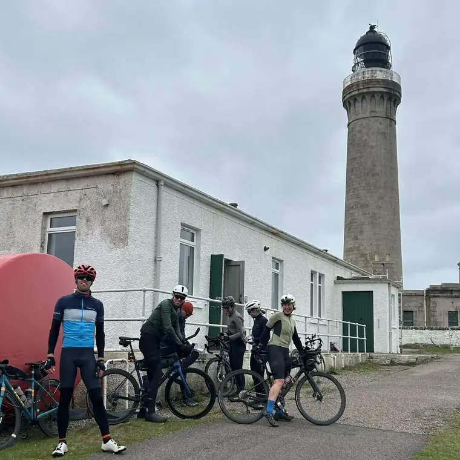

Grand Tour of Scotland 2028 – a 2000km Audax
2000km Audax · Monday 31 July 2028
Event at a glance
- Distance
- 2000kilometres
- Time limit
- 200hours, just over
- Start
- 31 Jul2028, 5pm–9pm
- Start location
- DumfriesCrichton Central
The ride
The Grand Tour of Scotland is a 2000km Audax event. What you’ll get is a 2000km ride around Scotland, lots of scenery, some stunning views, food at event controls and weather! Probably a great variety of weather.
It is not a race. It is an endurance challenge with a time limit. Riders will have just over 200 hours to complete the route, including any time taken to rest or eat, and there is a minimum speed limit of 10km/h.
The event is run under Audax UK and LRM (Les Randonneurs Mondiaux) rules, with some additional specific event rules and conditions.

Event information
-
Route
Start details, the two ferry crossings and what the roads are like.
View route -
Controls
Provisional control list with opening times, food, beds, showers and bag drop.
View controls -
GPX files
The current draft route, with sections provided to riders nearer the event.
Get the files -
Live tracking
Trackers are planned to be mandatory, for rider safety and event management.
How tracking works -
FAQ
Bag drops, sleeping, food, E-Brevet, qualifying and more.
Read the FAQ -
Enter
Entries will be through the Audax UK website. No qualifying rides needed.
How to enter
Please note
Most of the route is in very remote areas with limited facilities. Riders are expected to be self sufficient, and all details on this site – including the route, controls and opening times – are provisional and subject to change until final event information is issued.